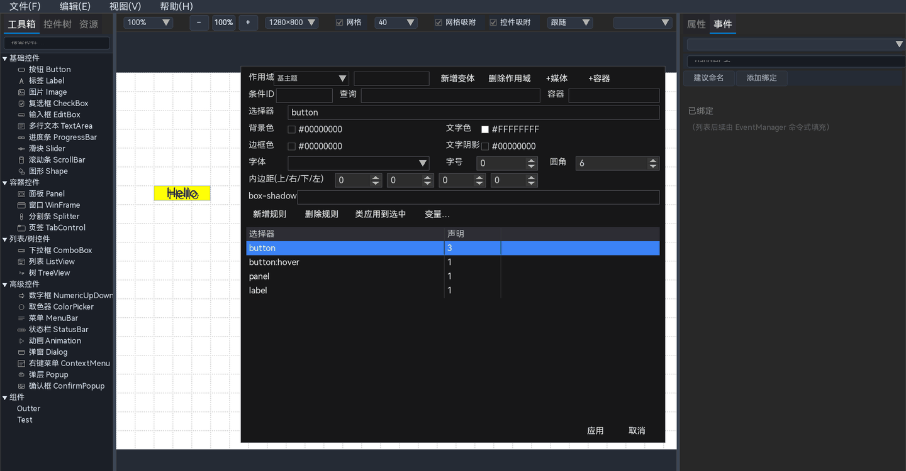

15 主题系统
主题用于统一控件外观：颜色、字体、圆角、间距、阴影，以及窗口变窄、容器变小、切换深色模式时的变化。它解决的是“同一个样式要改很多控件”的问题。
本章讲的是项目主题：它保存在工程里，作用于预览和导出的运行界面。设计器自身界面的颜色由另一份
designer_theme.json 控制，见 26.3。本章导览：15–17 先理解概念并完成第一个主题；18–21 讲选择器、声明、变量和类；22–25 讲变体、媒体、容器和完整示例；26 汇总常用配方、内置模板、设计器主题、排错和限制。新手建议按顺序阅读。

图 15-1 主题管理器：上方是作用域/条件/规则表单，下方是规则列表
15.1 先理解：主题能帮你做什么
假设画布上有 20 个按钮，都使用主色。没有主题时，主色从蓝色改成绿色，需要逐个选中按钮、逐个改颜色。使用主题后：
- 定义一个变量
--primary，或者一条规则button.primary； - 给 20 个按钮都加上
primary类； - 以后只需要改规则的背景色，20 个按钮一起变化。
主题不改变控件的位置和大小，只改变样式属性。布局仍然由画布上的位置、尺寸、容器和对齐决定。
如果只是想改一个控件的颜色，直接使用属性面板更快；当同一套样式要复用到多个控件时，再使用主题。
15.2 六个核心概念
| 概念 | 通俗含义 | 例子 |
|---|---|---|
| 变量 | 给一个值起名字，后面反复使用 | --primary = #4A90D9 |
| 选择器 | 这条规则作用到哪些控件 | button.primary |
| 声明 | 具体要改什么属性、改成什么值 | background: #4A90D9 |
| 规则 | “选择器 + 一组声明” | button.primary { background: ... } |
| 类（class） | 给控件贴的标签，供选择器匹配 | 按钮的 classes = ["primary"] |
| 作用域 | 规则放在哪一层：基础、变体、媒体或容器 | 基主题 / dark / 窄窗口 / 侧栏 |
另外两个概念是：
- 变体：在基础主题之上叠加的一套命名样式，例如
dark。切换变体时，基础规则仍然保留，变体规则覆盖同名属性。 - 条件：媒体条件（窗口宽度/高度/方向）或容器条件（某个祖先容器的尺寸）满足时，额外叠加规则。